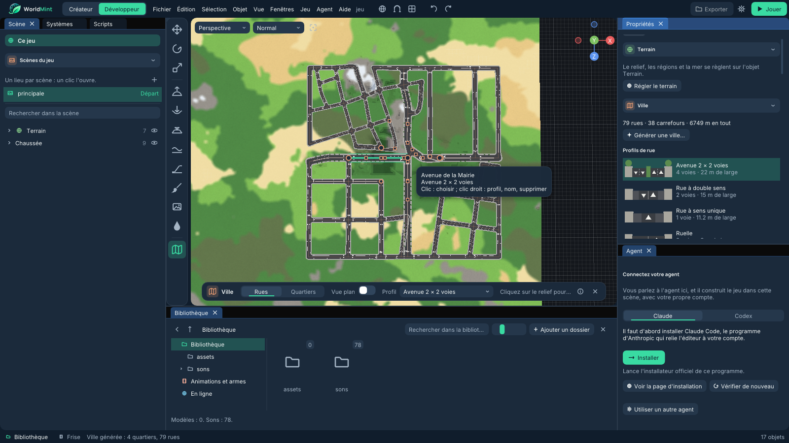
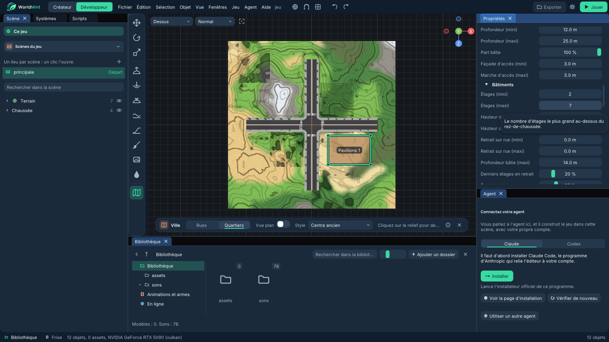
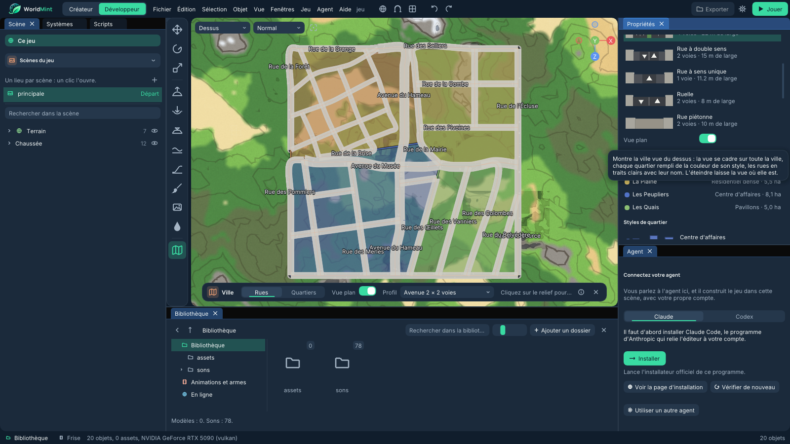

Villes et routes¶
L'outil Villes et routes dessine une ville sur le relief. Vous tracez le plan (les rues, leur profil, leurs carrefours, les quartiers), ou vous le faites générer d'un coup ; WorldMint fabrique la chaussée, les trottoirs, le marquage, les passages piétons, les arbres d'alignement et les ponts, et aplanit le relief dessous.
C'est l'extension Villes et routes : elle apparaît d'elle-même dans l'éditeur quand elle est installée (voir Une extension payante).

Où trouver l'outil¶
- Dans la palette, à gauche de la vue : l'icône de carte (sous les outils du terrain quand la scène en a un). Prise, elle ouvre sa barre d'options en bas de la vue : Rues ou Quartiers, Vue plan, le profil ou le style des prochains tracés, une aide (le i) et la croix qui range l'outil (comme Échap).
- Dans les propriétés, quand rien n'est sélectionné (Ce jeu) : la section Villes et routes. Elle donne le nombre de rues et de carrefours et leur longueur, la liste des Villes et le bouton Nouvelle ville…, la liste des Profils de rue, l'interrupteur Vue plan, la liste des Quartiers et celle des Styles de quartier.
Générer une ville¶
Pour partir d'une ville entière plutôt que d'une page blanche :
- Section Villes et routes des propriétés, sous Villes : Nouvelle ville….
- Tracez la zone de la ville sur le terrain (un rectangle glissé, ou un contour point par point ; voir Plusieurs villes), puis Entrée. Une fenêtre s'ouvre, avec la surface de la zone, le nom de la ville et son ambiance.
- La ville se pose dans la zone, sans toucher aux autres villes.
- Graine : un nombre. Le même nombre redonne la même ville ; Au hasard en tire un autre.
- Quartiers : cochez les styles voulus (centre d'affaires, centre ancien, résidentiel dense, pavillons, zone commerciale, zone industrielle, port, quartier américain, grands ensembles, bord de mer) et donnez la part de chacun ; le pourcentage à côté dit ce qu'elle donne. Les plus centraux vont au milieu, les pavillons au bord, le port et le bord de mer au bord de l'eau (décochés s'il n'y a pas d'eau).
- Générer.

La ville se fabrique en arrière-plan : la ligne d'état dit « Génération de la ville… », et l'éditeur reste libre. Vous obtenez des quartiers, des rues entre eux, deux avenues qui traversent la ville en suivant le relief, et les rues de chaque quartier selon son style (en grille, en tracé ancien et sinueux, en pavillons avec leurs impasses), chacune avec un nom. Les axes suivent une hiérarchie selon le style du quartier : dans le centre d'affaires, le quartier américain, la zone commerciale, le bord de mer et les grands ensembles, les avenues deviennent des grands boulevards 2 × 4 voies au terre-plein planté, et une rue sur trois du quadrillage une artère 2 × 3 voies ; dans la zone industrielle et le port, une rue sur deux (de grands pâtés, pour les camions) ; dans le quartier populaire et le quartier huppé, les avenues deviennent des artères 2 × 3 voies, sans autre artère ; les autres styles n'en ont pas encore. Une route large n'est posée que là où le sol tient sa pente maximale : sur une pente plus forte, la rue garde son profil habituel. Un quartier aux grands pâtés, qui a moins de rues dans chaque sens que le nombre voulu, prend sa rue du milieu comme artère. Elle se règle dans chaque style de quartier (Profil des grands axes, Profil des artères, Une artère toutes les N rues). À l'approche d'un carrefour, le terre-plein surélevé d'une artère ou d'un grand boulevard laisse sa place, sur 25 m, à une voie de tourne-à-gauche pour les voitures qui arrivent (réglage Voie de tourne-à-gauche du profil, 0 : aucune) ; ce qui reste du terre-plein garde sa bordure. Seulement pour qui peut tourner à gauche : à un carrefour en T, le sens qui n'a pas de rue à sa gauche n'a pas de voie de tourne-à-gauche, et son terre-plein, avec ses arbres, va jusqu'au passage piéton. Une zone presque toute sous l'eau ne reçoit ni quartier ni rue.
La ville arrive en une seule étape : un Ctrl+Z la retire d'un coup, relief compris. Si la scène a déjà des rues, la fenêtre le dit et le bouton devient Remplacer la ville : les profils de rue et les styles de quartier sont gardés, et Ctrl+Z rend l'ancienne ville.

Ensuite, modelez-la avec les gestes ci-dessous : une ville générée se modifie comme une ville tracée à la main.
Plusieurs villes¶
Une carte peut porter plusieurs petites villes collées, chacune avec son nom et son ambiance.
- Dans la section Villes et routes, sous Villes, cliquez sur Nouvelle ville… : l'outil se prend.
- Tracez la zone de la ville sur le terrain :
- Rectangle : glissez sur le terrain. Tirez ensuite un coin pour l'agrandir, le rond au-dessus pour le tourner.
- Contour : un clic par point (pour suivre une côte, par exemple). Un double-clic ou Entrée ferme le contour, Retour arrière retire le dernier point, Échap annule. Fermé, chaque point se déplace en le glissant.
- Le tracé s'aimante au bord d'une ville voisine (à quelques mètres) : les deux villes se touchent sans se recouvrir. Une zone qui recouvre une autre ville devient rouge, avec la raison au survol.
- Entrée ou Continuer… ouvre la fenêtre : la surface de la zone, le nom de la ville (tiré au hasard, à changer à volonté), son ambiance (européenne, américaine, bord de mer…), la graine et les quartiers. Générer ajoute la ville sans toucher aux autres ; ses rues se raccordent à celles de la voisine, à la frontière. Ctrl+Z la retire.
La liste Villes montre chaque ville, son ambiance et sa surface. Un clic en choisit une : son contour s'éclaire et la vue se cadre dessus. Ensuite :
- le champ du nom la renomme (Entrée garde le nom) ;
- Régénérer la refait dans la même zone, avec une autre graine ; son nom est gardé ;
- Supprimer retire ses rues, ses carrefours et ses quartiers ; les autres villes restent. Ctrl+Z la rend.
La distance de l'aimant se règle dans les données du plan (townSnapDistance, 8 m par défaut ; 0 : sans aimant).
Tracer des rues¶
- Prenez l'outil Villes et routes, en mode Rues.
- Choisissez le Profil des nouvelles rues dans la liste : chaque profil montre sa coupe (les voies et leur sens, le terre-plein, le stationnement, les trottoirs, les arbres). Les profils de départ sont l'avenue 2 × 2 voies, la rue à double sens, la rue à sens unique, la ruelle et la rue piétonne.
- Cliquez sur le relief pour poser les points de la rue. Entrée, ou un double-clic, la termine. Échap l'abandonne ; un clic droit retire le dernier point.
La rue se voit tout de suite en traits. La chaussée arrive quelques instants après : pendant ce temps, la ligne d'état dit « Mise à jour de la ville… », et vous pouvez continuer à travailler. Une fois la chaussée faite, les traits se font discrets : les nœuds n'apparaissent qu'autour de la souris et sur la rue choisie. Au survol, une rue dit son nom et son profil.
Raccorder les rues :
- un point posé sur une rue ou sur un carrefour y raccorde la nouvelle rue et la termine : un carrefour en T ;
- une rue qui en croise une autre y fait un carrefour ;
- un clic sur un nœud (un bout de rue, un carrefour) y commence une nouvelle rue ;
- deux carrefours posés trop près l'un de l'autre (le bout de rue entre eux plus court que la place que veulent leurs coins, selon la largeur des rues et leurs angles : plus loin pour des avenues que pour des rues) n'en font qu'un seul, au milieu des deux, avec une seule place de carrefour et ses trottoirs de coin. Votre plan garde ses deux nœuds : écartez-les pour retrouver deux carrefours.
Modifier :
- Glissez un nœud ou un point de passage : la rue suit, et la ville se refait autour au relâchement.
- Un clic sur une rue la choisit (elle s'éclaire). Suppr la supprime, avec les nœuds qui ne relient plus rien ; la chaussée part, le relief revient. Un second clic sur la rue choisie y commence une nouvelle rue. Tant que l'outil Villes et routes est pris, Suppr ne supprime que la rue choisie, jamais un objet de la scène.
- Clic droit sur une rue : Profil de la rue (la liste illustrée), Renommer la rue…, Supprimer la rue.
- Clic droit sur un carrefour : Rond-point (un second choix lui rend sa forme ordinaire). Les voitures tournent sur l'anneau, l'îlot à leur gauche (dans le sens inverse des aiguilles d'une montre vu de haut, la ville roulant à droite) : elles entrent et sortent en courbe, prennent la voie extérieure pour les premières sorties et la voie intérieure pour tourner à gauche ou faire demi-tour sur un anneau de deux voies, et cèdent le passage à l'anneau en entrant.
Ce que WorldMint fabrique autour des rues¶
Rien de tout cela n'est à faire à la main : tout se refait quand le plan change, et revient tel quel quand on retire une rue.
- Le relief aplani. Le terrain s'aplanit sous chaque rue, avec des talus doux (une pente de 1 pour 2) de chaque côté. Les rues suivent le relief dans la pente que permet leur profil (12 %, 8 % pour une avenue) ; les carrefours, leurs passages piétons et leurs lignes d'arrêt restent plans. Retirer la ville rend le relief d'origine, exactement.
- Pas de murets. Le relief se raccorde toujours aux rues par un talus, jamais par un mur. Sur un flanc raide, le talus prend la place qu'il lui faut, et se raidit à son bout pour rejoindre le terrain ; il ne passe jamais au-dessus d'un trottoir ni d'une chaussée.
- Les ponts. Une rue qui franchit un creux de plus de 3 m, ou de l'eau, devient un pont : un tablier, des garde-corps et des piles posées au sol (30 m au plus entre deux). La chaussée y entre sans marche.
- Les arbres d'alignement, le long des trottoirs, à l'espacement que donne le profil, hors des carrefours et des ponts. Si le profil ne nomme aucun modèle d'arbre, WorldMint pose ses arbres livrés (« Realistic Trees Collection » de Jungle Jim, CC BY 4.0, crédités dans la page Crédits) : un arbre moyen le long des trottoirs, un grand sur un terre-plein d'au moins 4 m, chacun à une taille qui laisse son feuillage hors des façades. Ils sont copiés avec leur licence dans
ville/arbres/du projet. Le long des trottoirs, ils sont élagués comme en ville : une copie élaguée est écrite dans le cache du projet (.worldmint/ville/arbres/, le modèle livré n'est jamais touché) sans les branches basses (sous 2,4 m,treeClearance), sans ce qui passe au-dessus de la chaussée sous 4,5 m (treeRoadClearance, la place des camions), sans ce qui entre dans la façade ni ce qui dépasse de plus de 1,5 m au-dessus de la chaussée (treeCrownOverRoad). Une branche retirée part avec ses feuilles et les branches qu'elle porte : aucune feuille ne reste en l'air ; le tronc reste toujours. Un arbre élagué garde toujours au moins 40 % de ses feuilles (treeMinFoliage) : sinon WorldMint prend le même plus grand (son houppier passe au-dessus de la chaussée), un peu plus petit, ou un autre arbre livré ; si aucun ne tient, la forme simple. Au pied de chaque arbre de trottoir, une fosse carrée de 1,3 m (treePitSize, 0 pour aucune) : un cadre de la même pierre que la bordure du trottoir, aux coins et aux arêtes arrondis, en blocs comme la bordure, sur lequel on marche, et un fond de terre, le tronc au centre ; aucun meuble n'y est posé. La terre et le granit des bordures sont de vraies textures de Poly Haven (CC0, « Mud Forest » et « Granite Tile 03 », créditées dans la page Crédits), copiées dans le projet (ville/matieres/) où l'on peut les modifier. Un modèle choisi dans le profil passe toujours avant ;shippedTrees: falsedans les réglages de génération remet la forme simple. - L'herbe dégagée. Les plantes semées par le terrain ne poussent ni sur la chaussée, ni sur les trottoirs, ni dans les carrefours : l'herbe s'arrête au bord du trottoir. Sous un pont, elles ne s'écartent que là où le sol est proche du tablier.
Les routes hors de la ville¶
Le même outil trace aussi les routes des champs et de la montagne. Les profils de rue sont rangés en quatre familles : Ville (les rues, l'avenue, le boulevard, la rue pavée, l'artère 2 × 3 voies, le grand boulevard 2 × 4 voies…), Campagne (la route secondaire, la voie rapide 2 × 2 voies, la petite route de campagne), Montagne (la route de montagne) et Chemins (la piste forestière, le chemin de terre, le sentier, le chemin pavé). Une route se raccorde à une rue par un vrai carrefour.
Une route de campagne n'a pas de trottoir, donc pas de bordure :
- Les bas-côtés : une bande de chaque côté, au niveau de la route, entre la chaussée et le fossé. Aux carrefours, les coins sont de la chaussée jusqu'au bord ; le trottoir d'une rue qui y arrive se ferme par une bordure.
- Les fossés : un creux de chaque côté, au-delà du bas-côté, creusé dans le sol. Retirer la route rend le sol d'origine. L'herbe et les plantes poussent dans le fossé.
- Les barrières : une glissière en acier ou un garde-fou, posés des deux côtés, seulement là où le sol tombe à côté de la route, ou automatiquement : seulement là où une voiture peut sortir de la route, le long d'un remblai haut et à l'extérieur d'un virage trop serré pour la vitesse de conception de la route. Les routes hors de la ville (route secondaire, voie rapide, campagne, montagne) ont leurs glissières en automatique ; les rues de la ville n'en ont pas. Il n'y en a pas sur un pont (il a ses garde-corps), ni dans un carrefour, ni le long d'une rue bordée de trottoirs, ni en petits bouts isolés. Un modèle du projet peut remplacer la glissière fabriquée : il est répété le long de la route, à sa longueur mesurée.
- Le marquage : complet (les lignes entre les voies, les lignes de rive au bord des voies, les passages piétons aux carrefours), rive seule (les deux lignes du bord) ou aucun. Une rue de ville n'a pas de ligne de rive : ses trottoirs la bordent.
- La norme de signalisation : américaine par défaut (les usages des rues américaines, le MUTCD) ou européenne. En américaine : une ligne jaune sépare les deux sens (double continue, ou discontinue sur les petites rues, alors doublée avant les carrefours, ou aucune) ; des tirets blancs de 3 m tous les 12 m séparent les voies de même sens ; un terre-plein est bordé de jaune, la voie de tourne-à-gauche a une double ligne jaune à sa gauche, sa flèche et le mot ONLY ; le cédez-le-passage est une rangée de triangles blancs pointés vers les voitures qui arrivent (seulement là où le panneau YIELD est posé) ; les passages piétons sont à bandes (continental) aux carrefours à feux et à deux lignes ailleurs. Aux ronds-points américains, des triangles blancs à chaque entrée (on cède à l'anneau), une ligne jaune continue le long de l'îlot et, sur un anneau à deux voies, des tirets blancs entre elles ; sur une entrée de deux voies et plus, une flèche par voie (à gauche et tout droit sur la plus à gauche, tout droit et à droite sur la plus à droite). La norme se choisit pour toute la ville dans les réglages de la génération (américaine par défaut) ; un profil la suit (Celle de la ville, le défaut) ou force la sienne. Chaque mesure se règle dans le groupe Marquage du profil. En européenne, le marquage reste celui d'avant (lignes blanches, tirets au cédez-le-passage).
- Les arbres : sur une route sans trottoir, les arbres d'alignement se plantent au-delà du fossé.
La largeur des bas-côtés et des fossés, la profondeur des fossés, la sorte de barrière et le marquage sont des réglages de chaque profil. La hauteur des glissières et des garde-fous, l'écart des poteaux et leur couleur sont des réglages communs à toute la ville. Une longue route (plusieurs kilomètres) se pose sans figer l'éditeur.
Les matières des routes¶
Chaque partie d'une route a sa matière : la chaussée, les trottoirs, les bordures, les caniveaux, les bas-côtés et le marquage. Par défaut, l'outil fabrique lui-même ses matières, sans rien télécharger : asphalte, pavés, dalles, béton, granit, gravier, terre et peinture de marquage. Ce sont de vraies images (couleur, relief, brillance), sans raccord visible, à la bonne taille : un pavé fait une dizaine de centimètres, une dalle un demi-mètre. Elles sont rangées dans le dossier caché du projet et refaites seulement quand une recette change.
Chaque matière a ses états : neuf, usé, fissuré ou rapiécé ; le marquage peut aussi être effacé (la peinture a des trous). L'état change d'une rue à l'autre, toujours le même pour le même plan :
- en ville, c'est le style du quartier qui décide (neuf au centre d'affaires, usé et rapiécé en zone industrielle, pavé au centre ancien) ;
- hors de la ville, c'est le profil de la route, ou l'entretien choisi pour une rue (neuf, usé, fissuré, rapiécé) ;
- une chaussée rapiécée a des rapiéçages : des rectangles d'enrobé plus neuf, posés dans les voies (leur matière, son état et leur teinte se règlent dans
contenu/matieres_route.json, sectionpatchesde l'état rapiécé : un peu plus sombres que la chaussée, sans faire tache).
Deux rues voisines ne montrent pas le même motif au même endroit, et le motif suit la rue dans ses virages. Dans un carrefour, il garde le sens de la rue la plus large : les pavés ne tournent pas d'un coup en passant de la rue au carrefour. Quand une rue continue d'un morceau à l'autre, le motif tourne avec elle, et autour d'un coin de trottoir, les dalles suivent la courbe de la bordure.
La bordure et le caniveau, comme dans une vraie rue :
- la bordure est une rangée de blocs de granit (ou de béton) qui tient le trottoir : on voit leur dessus (15 à 30 cm de large), leur arête côté chaussée, arrondie en quart de rond, et un joint tous les mètres environ. Le trottoir commence derrière elle. Dans le profil, groupe Bords : le dessus de la bordure, la longueur d'un bloc, le chanfrein ; sa couleur se règle avec la teinte de la bordure (jaune, comme à Miami) ;
- le caniveau est une bande de pavés ou de dalles au pied de la bordure, au niveau de la chaussée, où l'eau s'écoule (25 à 50 cm). Il est pris sur la chaussée : les voies ne bougent pas. Sa largeur se règle dans Bords (0 : sans caniveau) et sa matière à l'endroit Caniveau. Les rues de ville en ont un ; l'avenue moderne n'en a pas.
Remplacer une matière par un matériau du projet : chaque partie d'un profil peut prendre un matériau de votre projet (un fichier .wmmat du dossier materials, fait par exemple d'images de Poly Haven, d'ambientCG ou d'un pack). La taille de son motif est celle du matériau : réglez-la dans le matériau, la route la suit. Si le fichier manque, la route reprend la matière fabriquée et le dit (l'agent le voit aussi avec city_check). Le jeu exporté emporte les matières fabriquées et les images des matériaux utilisés.
De vraies photos à la place des matières fabriquées : le catalogue contenu/matieres_ville/matieres.json liste les textures photographiées livrées avec WorldMint. Chaque entrée donne son dossier (id), sa taille réelle en mètres (size : la photo est posée à cette taille, jamais étirée au motif d'une matière fabriquée), rotate (false pour une matière qui a un sens : brique, tuiles, bois) et replaces, les matières fabriquées qu'elle remplace, avec les états qu'elle couvre (["asphalte"] pour tous ses états, ou [{"recipe": "asphalte", "wears": ["worn", "cracked"]}]). Sur les rues comme sur les bâtiments, une matière fabriquée remplacée par une photo est dessinée avec la photo, copiée dans le projet (ville/matieres/, avec sa licence) comme un matériau que vous pouvez y changer ; sans photo, la matière fabriquée reste. La première entrée qui couvre une matière l'emporte. Le catalogue se modifie à la main ; un matériau du projet choisi pour une partie passe toujours avant.
Choisir en ligne… : sous la matière de chaque partie (dans le groupe Matières du profil), ce bouton ouvre une petite fenêtre de la bibliothèque en ligne, sur les sources que vous avez déjà choisies (dossier En ligne de l'explorateur d'assets, bouton Sources : Poly Haven, ambientCG). Sans source choisie, la fenêtre le dit et rien n'est contacté. Elle montre les textures, avec leur aperçu, leur licence et leur taille réelle ; le mot de la partie est cherché d'avance (« paving » pour le trottoir, « asphalt » pour la chaussée), changez-le à votre guise. Un clic télécharge la texture dans le projet (une barre de progression le montre, l'éditeur ne gèle pas), en fait un matériau à sa taille réelle, puis la pose sur la partie. Ctrl+Z la retire. Les mentions demandées par les sources (« Powered by Poly Haven ») restent en bas de la fenêtre.
Les chemins peints¶
Le sentier, le chemin de terre et la piste forestière ne sont pas posés comme une route : ils sont peints dans le sol, comme au pinceau des matériaux du sol. Il n'y a ni chaussée, ni bordure, ni marquage : la terre ou le gravier se fondent dans l'herbe, avec un bord doux et un peu irrégulier. Un chemin usé est un peu moins marqué, et son bord plus irrégulier.
- Le relief : sous un chemin, le sol n'est aplani qu'un peu (un réglage du profil : peu pour un sentier, davantage pour une piste). Le chemin suit la pente, sans talus ni mur.
- Les plantes : rien ne pousse sur la largeur du chemin ; l'herbe et les arbres reviennent jusqu'à son bord.
- Les carrefours : deux sentiers qui se rejoignent se fondent l'un dans l'autre. Un sentier qui arrive sur une rue commence au bord du carrefour, qui est posé comme les autres.
- Les matériaux du sol : un chemin se peint avec les matériaux du sol. Si le terrain n'en a pas encore, le premier chemin les active (Terrain ▸ Matériaux du sol) ; Ctrl+Z les retire avec le chemin. Le sol peut avoir 16 matériaux au plus : s'il les a déjà, le chemin n'est pas peint et l'agent le signale.
- Le retrait sans trace : retirer un chemin, ou Ctrl+Z, rend le sol exactement comme avant : le relief, la peinture du sol et les plantes.
La matière d'un chemin (la terre, le gravier) est fabriquée dans le dossier du projet ; elle peut être remplacée par un matériau du projet dans le profil. La peinture du sol a une case par mètre : un sentier très étroit reste un peu flou vu de près.
La galerie des profils¶
La liste Profil de la barre d'options, et la liste Profils de rue de la section, rangent les profils en quatre groupes : Ville, Campagne, Montagne et Chemins. Chaque profil montre sa coupe : ses voies et leur sens, son terre-plein, son stationnement, ses trottoirs, et hors de la ville ses bas-côtés (gris clair, au niveau de la chaussée), ses fossés (un creux sous le trait du sol) et ses barrières (deux petits traits debout). Un chemin peint dans le sol se montre en bande de terre fondue sur le trait du sol, sans épaisseur.
Régler un profil¶
Dans la section, un clic sur un profil le choisit pour les prochaines rues et ouvre son réglage, en groupes repliables :
- Général : la famille du profil (où il se range dans la galerie), sa surface (Revêtement : une chaussée en relief ; Peinte dans le sol : un chemin de terre, un sentier), rue piétonne, impasse voulue ;
- Voies : la largeur et le sens de chaque voie, Ajouter une voie, et la croix pour en retirer une ;
- Bords : le terre-plein, le stationnement, la largeur du trottoir et la hauteur de sa bordure, le dessus de la bordure, la longueur de ses blocs, son chanfrein, la largeur du caniveau, la largeur du bas-côté, la largeur et la profondeur du fossé, la barrière (aucune, glissière, garde-fou), sa place (des deux côtés, là où le sol tombe, ou automatique, avec la chute du sol, l'adhérence en virage, la marge avant et après un virage et la longueur la plus courte) et son modèle (Modèle de glissière…, un modèle du projet, ou la glissière fabriquée) ;
- Marquage : complet, rive seule ou aucun ;
- Relief : la pente la plus forte, le déblai et le remblai les plus grands, la vitesse de conception (la rue monte et descend en douceur, sans bosse, pour être prise à cette vitesse ; 0 : elle suit le relief), l'aplanissement, le bord fondu d'un chemin peint ;
- Arbres : leur écart et leur hauteur ;
- Matières : pour chaque endroit de la voie qui sert (la chaussée, le trottoir et sa bordure, le caniveau, le bas-côté, le marquage ; un chemin peint n'a que sa chaussée), la matière (une matière fabriquée par l'éditeur, avec sa pastille de couleur, ou un matériau de votre projet ; sans matériau dans le projet, la liste le dit), la teinte, et les états permis : chaque état a sa case et son poids au tirage (neuf, usé, fissuré, rapiécé ; le marquage peut être effacé, jamais fissuré ni rapiécé). Une matière choisie ici l'emporte sur celle que le style du quartier donne à ses rues (le béton des trottoirs de la zone industrielle, par exemple) ; laissée telle que livrée, c'est celle du quartier qui se voit.
Un réglage refusé (une valeur hors des limites, aucun état permis) est dit en rouge sous le réglage, et le profil ne change pas. Chaque changement s'annule d'un Ctrl+Z ; un curseur tiré n'en fait qu'un. Les boutons : Nouveau profil (une copie du profil ouvert, à régler sans toucher aux rues qui gardent l'original), Renommer le profil…, Supprimer le profil (refusé tant qu'une rue s'en sert) et Rétablir ce profil (un profil livré retrouve ses valeurs d'origine).
Dans le réglage d'un style de quartier, le groupe Rues et mobilier a aussi les États des rues (la part de chaque état, en %, pour les rues du quartier ; les parts font toujours 100 %, en changer une ajuste les autres : du neuf au centre d'affaires, de l'usé et du rapiécé en zone industrielle) et les Matières des rues du quartier (la chaussée et le trottoir des rues de ville : Celle du profil, une matière fabriquée comme les pavés du centre ancien, ou un matériau du projet). Une matière du projet choisie dans un profil l'emporte toujours.
Les matières d'une seule rue¶
Clic droit sur une rue ▸ Matières de cette rue… ouvre une petite fenêtre avec chaque partie de la rue : Chaussée, Trottoir, Bordure, Caniveau, Bas-côté et Marquage. Pour chacune : sa pastille et la liste des matières (les matières fabriquées, puis les matériaux du projet, qui remplacent la matière fabriquée), Choisir en ligne… pour une texture réaliste de la bibliothèque en ligne, une Teinte, et Revenir à celle du quartier. La matière choisie pour une rue passe avant celle de son quartier et de son profil : une ruelle pavée dans un quartier d'asphalte, une bordure jaune sur une seule avenue. Seules les tuiles de cette rue se refont, ni le relief ni la chaussée. Chaque changement s'annule d'un Ctrl+Z.
L'entretien d'une route¶
L'état de chaque rue est tiré une fois pour toutes : le même plan donne toujours les mêmes états. En ville, il vient du style du quartier ; hors de tout quartier, ou pour un chemin peint, des poids du profil. Clic droit sur une rue ▸ Entretien l'impose à toute la rue : Selon le quartier (le tirage), Neuf, Usé, Fissuré ou Rapiécé. Au survol, une rue dit son profil et l'état de sa chaussée (« Usé, selon le quartier Zone industrielle », « Neuf, imposé »). Chaque choix s'annule d'un Ctrl+Z.
Dessiner des quartiers¶
La ville se découpe en quartiers, chacun avec un style : centre d'affaires, centre ancien, résidentiel dense, pavillons, zone commerciale, zone industrielle, port, quartier américain (immeubles de brique, escaliers de secours, réservoirs d'eau sur les toits), grands ensembles (barres et tours des années 1970, loggias), bord de mer (enduit clair, arcades, toits en terrasse). Le style dit comment ses pâtés se découpent en parcelles et ce qui s'y bâtira : la taille des parcelles, la part bâtie, les étages, les retraits, les toits, les commerces.
Les maisons des pavillons. Le style Pavillons pose une vraie maison entière sur chaque parcelle bâtie, au lieu du bâtiment généré : deux maisons sont livrées avec WorldMint (« American House » d'AleixoAlonso et « Suburban House V2 » de Bogdan Strielecki, CC BY 4.0, créditées dans la page Crédits). Chaque maison a sa porte de garage tournée vers la rue quand elle en a une (l'American House), avec une allée de garage en béton de la rue jusqu'à elle, sinon sa porte d'entrée, avec une allée dallée jusqu'à elle ; sa façade sur la ligne du recul de la parcelle, et reste à 1 m au moins des autres limites : jamais sur le trottoir ni chez le voisin. Une maison trop grande pour sa parcelle n'est jamais réduite : la parcelle garde le bâtiment généré. La liste des maisons d'un style est une donnée (« houses » du style : le dossier du projet et, pour chaque modèle, le côté de sa porte, sa part, et le milieu mesuré de sa porte d'entrée et de sa porte de garage) : vous pouvez y mettre les vôtres, ou demander à l'agent. Les parcelles des pavillons font 20 à 28 m de façade, comme dans une banlieue américaine ; une parcelle d'angle garde le bâtiment généré, qui tient le retrait sur ses deux rues. Une maison est entière jusqu'à 25 m (réglage houseDetailDistance de la génération), sa version allégée au-delà, jusqu'à l'horizon. Clôtures : chaque parcelle à maison est close, basse et continue le long de la rue (ouverte seulement sur son allée de garage ou son allée à pied), plus haute sur les côtés et au fond, une seule clôture sur une limite commune ; chaque rue a son type (palissade blanche ou en bois, grillage, claustra en bois) ; aucun portail par défaut (gateShare à 0 : un portail à vous peut fermer l'ouverture). Les clôtures livrées (TampaJoey, Visthétique) sont sous CC BY 4.0, créditées dans la page Crédits ; la liste est une donnée du style (« fences »), où mettre les vôtres. Chaque parcelle peut changer ses clôtures côté par côté (rue, gauche, droite, fond, vus de la rue) : aucune, celle de la rue, une autre clôture livrée ou un modèle du projet ; la retouche est gardée quand la ville se régénère (demandez à l'agent : city_building_set avec « fences »).
- Dans la barre d'options de l'outil Villes et routes, passez de Rues à Quartiers.
- Choisissez le Style des nouveaux quartiers dans la galerie : chaque style montre sa couleur et une petite silhouette de ses bâtiments.
- Cliquez sur le relief pour poser les points de la zone (un point posé près d'un carrefour s'y colle). Entrée, ou un double-clic, la ferme ; Échap l'abandonne ; un clic droit retire le dernier point.

Pour modifier un quartier :
- Un clic dans un quartier le choisit : ses points deviennent des poignées. Glissez un point pour changer sa forme. Suppr retire le quartier choisi (les rues restent).
- Clic droit sur un point : Retirer ce point ; sur un côté : Ajouter un point sur ce côté.
- Clic droit dans le quartier : Style du quartier (la galerie), Renommer le quartier…, Autre tirage (ses parcelles se redécoupent autrement), Supprimer le quartier.
Régler un style, ou créer le sien¶
Dans la section Villes et routes, la liste Quartiers montre chaque quartier avec sa couleur, son style et son aire. Sous Styles de quartier, un clic sur un style ouvre ses réglages, rangés en groupes : Parcelles, Bâtiments, Commerces, Rues et mobilier, et sa couleur sur le plan. Chaque réglage a son infobulle.
- Régler un style change tous ses quartiers. Pour n'en changer qu'un, faites d'abord un Nouveau style (une copie du style ouvert), réglez-le, puis donnez-le à ce quartier (clic droit › Style du quartier).
- Renommer le style… change son nom ; Rétablir ce style rend à un style de départ ses valeurs d'origine ; Supprimer le style est refusé tant qu'un quartier s'en sert.
- Le groupe Façades donne la matière de chaque usage de façade du style (brique, enduit, pierre, tuiles, et les Marches des entrées, un granit sans joints par défaut, et la longueur de leurs Blocs des marches…) : fabriquée, ou un matériau du projet, avec le même Choisir en ligne…. Il a aussi le Calque de salissure, une image du projet avec transparence (un calque
Leakingd'ambientCG, par exemple, choisi en ligne parmi les calques). Ce réglage est préparé : la pose des façades le prendra plus tard, avec de vrais calques ; les salissures calculées des façades sont retirées, il n'a donc pas d'effet pour l'instant. - Le groupe Rues et mobilier sert à Générer une ville : le tracé des rues du quartier (en grille, organique ou pavillonnaire), la taille des pâtés, le profil de ses rues, sa place dans la ville (Centralité, Au bord de l'eau).
Chaque geste s'annule d'un Ctrl+Z ; un curseur tiré n'en fait qu'un.
La densité d'un quartier¶
Chaque quartier a son type (son style : centre ancien, affaires, pavillons, quartier populaire, quartier huppé…), qui fixe son allure, et une Densité, de 0 à 100 %, qui règle ce type d'un quartier à l'autre. Choisissez le quartier dans la liste Quartiers : le curseur Densité du quartier apparaît sous lui.
- Plus haut : des pâtés plus petits, des parcelles plus étroites et moins profondes, plus de parcelles bâties, des bâtiments plus profonds (moins de cour perdue) et plus hauts, moins de jardins.
- Plus bas : de grands pâtés, de grands terrains, plus de retrait sur la rue, des bâtiments plus bas, plus de jardins.
- 50 % : le style tel qu'il est réglé. C'est la densité d'un quartier d'une ville d'avant : rien n'y change tant que vous ne touchez pas au curseur.
La fenêtre Générer une ville a aussi une Densité, donnée à tous les quartiers de la nouvelle ville ; elle change aussi la taille des pâtés de ses rues. Vous la réglez ensuite quartier par quartier. Deux types vont avec : le Quartier populaire (immeubles collés, serrés, de 4 à 7 étages, petits pâtés, façades étroites) et le Quartier huppé (villas de 2 à 3 niveaux sur de grands terrains, grands retraits, jardins, toits en pente) ; l'ambiance européenne les a tous les deux, l'américaine a le quartier huppé.
Ce que la densité change, style par style, est dans le fichier des styles (styles_quartier.json) : lowDensity et highDensity donnent la valeur de certains réglages à 0 % et à 100 % (taille des pâtés, des parcelles, part bâtie, profondeur bâtie, étages, retraits, part plantée) ; entre les deux, WorldMint passe de l'un à l'autre. Un réglage absent ne change pas avec la densité.
La vue plan¶
L'interrupteur Vue plan (dans la barre d'options et dans la section Villes et routes) montre la ville vue du dessus : la vue se cadre sur toute la ville, chaque quartier est rempli de la couleur de son style, les rues sont des traits clairs à leur largeur, avec leur nom. L'éteindre laisse la vue où elle est.

Les parcelles et leurs retouches¶
Chaque pâté (l'espace entre les rues) est découpé en parcelles le long des rues, selon le style de son quartier : leur largeur sur rue, leur profondeur, la part bâtie. En mode Quartiers et dans la vue plan, chaque parcelle se dessine d'un contour fin ; une parcelle libre (cour, jardin, parking) est hachurée en vert pâle, une parcelle sans accès (trop étroite, ou le sol trop haut ou trop bas par rapport au trottoir) est en rouge, une parcelle retouchée porte un petit repère. Au survol, une bulle dit sa rue et son côté, sa façade, sa profondeur, sa pente, son quartier, son style et son accès. Le découpage se refait en arrière-plan : « Découpage des parcelles… » dans la ligne d'état.
En mode Quartiers, un clic droit sur une parcelle propose, en tête du menu du quartier :
- Laisser libre (cour, jardin, parking), ou Bâtir pour une parcelle libre ;
- Style de la parcelle ▸ : un autre style pour cette seule parcelle ;
- Revenir à la génération : retire sa retouche.
Chaque retouche est une étape, que Ctrl+Z défait. Elle reste attachée à sa parcelle quand la ville se refait (un nœud déplacé, un style réglé), et la suit quand sa rue est coupée par un nouveau carrefour. Quand sa rue est supprimée, elle ne tient plus : rien n'est perdu, la section Villes et routes la montre sous Retouches qui ne tiennent plus, avec la raison. Rattacher à la plus proche la donne à la parcelle la plus proche de l'endroit où elle était ; Supprimer la retouche la retire.
Le mode Bâtiments¶
Dans la barre de l'outil, Rues | Quartiers | Bâtiments : en mode Bâtiments, les bâtiments de la ville se calculent en arrière-plan (« Calcul des bâtiments… » dans la ligne d'état) ; l'éditeur ne se fige pas. Le bâtiment sous la souris s'entoure d'un contour fin ; un clic le choisit (un contour marqué). Un clic à côté de tout bâtiment, ou Échap, ne choisit plus rien.
Le volet du bâtiment s'ouvre dans la section Villes et routes :
- sa parcelle : sa rue et son côté, sa façade, sa profondeur, sa pente ;
- Style : un autre style pour sa seule parcelle ;
- Hauteur (étages) : les étages au-dessus du rez-de-chaussée, avec la hauteur en mètres à côté ;
- Toit : Plat, En pente ou Terrasse ;
- Façade : la recette des fenêtres, portes et balcons ;
- Mur : la matière du mur, avec sa pastille, parmi celles de son style ; Autre… donne celles des autres styles de la ville ;
- Teinte : la couleur du mur ; Teinte tirée rend celle de la génération ;
- Commerce : Aucun, une sorte, ou Tiré par le style ;
- pour un bâtiment d'angle à deux ailes seulement : Forme de l'angle (Vif, Pan coupé ou Arrondi) et Usage de l'angle (l'usage du rez-de-chaussée d'angle : Commerce, Café, Hôtel, Habitation, Pharmacie, Banque ou Boulangerie : les vitrines, l'enseigne, le store ou la terrasse de la face d'angle) ;
- Retouches de ce bâtiment : chaque réglage changé, avec sa croix pour le retirer ;
- Remplacer par… : Un modèle de la bibliothèque… pose à la place un modèle du projet, en lieu marquant (sa face +z vers la rue) ; Rien : je le construis moi-même laisse la parcelle vide, en lieu marquant, pour vos propres objets ; son nom s'affiche au-dessus dans la vue, et la parcelle vide est entourée de pointillés ;
- Verrouiller : le bâtiment reste tel quel, quoi que deviennent son style ou la graine de la ville ; un cadenas s'affiche au-dessus de lui. Déverrouiller le rend à la génération ;
- Revenir à la génération : retire toutes ses retouches de bâtiment (son style et son usage restent).
Un clic droit sur un bâtiment donne les mêmes actions, plus Plus haut d'un étage et Plus bas d'un étage. Chaque changement est une étape, que Ctrl+Z défait ; il reste attaché à sa parcelle quand la ville se refait.
Déplacer un bâtiment dans sa parcelle. Le bâtiment choisi a une poignée : un rond au pied de sa façade sur rue. La souris dessus, elle devient menthe. Tirez-la : le contour du bâtiment au sol suit la souris, vers la rue, vers le fond ou de côté. Il s'arrête au bord de sa parcelle : jamais sur le trottoir, jamais chez le voisin, et il garde sa taille. Relâchée, la poignée pose le Décalage du bâtiment, en une étape (Ctrl+Z le défait). Échap pendant le glissé le laisse où il était. S'il touche déjà le bord du côté où vous tirez, il ne bouge pas : la poignée devient orange et une phrase dit pourquoi.
Échanger deux bâtiments. Tirez la poignée et lâchez-la sur un autre bâtiment : sa parcelle s'entoure de menthe pendant le survol. Les deux bâtiments échangent leur place : chacun prend la hauteur, le toit, la façade, le mur, la teinte et le commerce de l'autre, à la forme de sa nouvelle parcelle. C'est une étape (Ctrl+Z la défait), et l'échange reste quand la ville se régénère. Un lieu marquant, un bâtiment verrouillé, un bâtiment d'angle à deux ailes ou un bâtiment sur cour ne s'échangent pas : la poignée devient orange et la phrase dit pourquoi. Pas dans cette version : tourner un bâtiment librement, ou le poser à cheval sur deux parcelles.
Le sol sous les bâtiments. La ville pose sur chaque parcelle revêtue une dalle : un sol plat, au moins à la hauteur du trottoir, avec un joint tout autour. En mode Bâtiments, un clic sur le sol d'une parcelle (à côté du bâtiment) choisit sa dalle : son contour devient menthe et le volet Sol s'ouvre :
- Matière : une matière fabriquée pleine (béton, asphalte, dalles, pavés, granit, brique… ; ni métal, ni salissure) ou un matériau du projet, comme pour le sol d'un style ;
- Hauteur : sa hauteur au-dessus du trottoir, en mètres (0 : au niveau du trottoir, jamais en dessous). Sous un bâtiment, la dalle garde la hauteur du bâtiment ;
- Tracer une dalle (aussi dans la barre de l'outil) : tirez un rectangle dans une parcelle. Il s'aimante aux bords des autres dalles et de la parcelle. La nouvelle dalle remplace le sol dessous et se pose au même niveau, avec un seul joint entre les deux. Elle prend d'abord la matière de la dalle où vous avez commencé : changez-la ensuite dans le volet. Pour un sol moitié béton, moitié bitume, tracez une dalle sur la moitié de la parcelle et donnez-lui l'asphalte ;
- Retirer cette dalle (ou Suppr) : pour une dalle ajoutée, le sol d'avant revient dessous ;
- Revenir au sol de la ville : retire toutes les dalles ajoutées et les matières changées de la parcelle.
Chaque geste est une étape, que Ctrl+Z défait ; il reste quand la ville se refait. Échap ne choisit plus de dalle, ou arrête le tracé.
Un lieu marquant se choisit aussi d'un clic, sur sa parcelle. Son volet donne :
- Nom : Renommer… ouvre le champ, Entrée le pose ;
- Modèle (Changer le modèle…) : un autre modèle du projet, ou Rien : je le construis moi-même ;
- Tourner de 90° : un quart de tour, pour mettre sa face avant côté rue ;
- Taille : Taille réelle (mesurée sur le modèle) ou À la taille de la parcelle ;
- Niveau du sol : la hauteur du modèle posée au niveau du trottoir. Mesuré prend la plus grande surface plate près du bas du modèle (un parking, une pelouse, le sol du rez-de-chaussée) : une piscine ou un sous-sol descend sous la rue au lieu de soulever le modèle ; à moins d'un demi-mètre du bas (un socle, une coursive), le bas du modèle reste au trottoir. Réglé à la main : une hauteur en mètres au-dessus du bas du modèle (elle part du niveau mesuré) ;
- Objets reliés : les objets de la scène que vous avez posés sur la parcelle et reliés à elle ; un clic dans la liste en choisit un. Relier les objets choisis ajoute les objets choisis dans la scène ; Délier retire ceux qui sont choisis (ils restent dans la scène). Un objet relié suit la parcelle si la rue bouge ; il n'est relié qu'à un lieu marquant.
Les réglages de bâtiment d'un style (mode Quartiers, groupe Bâtiments de son réglage) : en plus des étages, des hauteurs, des retraits et des toits, Façade (la recette), Kit de façade (Modules fabriqués, ou un dossier de modèles du projet), Matières du mur (chacune avec sa pastille et Remplacer par un matériau du projet… ; Ajouter une matière, la croix pour la retirer), Usure (la part de Neuf, Usé et Fissuré, en % ; les parts font toujours 100 %, en changer une ajuste les autres), Écart sur les côtés (mini et maxi ; 0 : les bâtiments se touchent), Recul du dernier étage, Pente des toits, puis, pour les bâtiments d'angle à deux ailes, Forme de l'angle (la part de Vif, Pan coupé et Arrondi, en %) et Usage de l'angle (la part de chaque usage du rez-de-chaussée d'angle, en %), comme l'usure, le Rayon de l'arrondi et la Largeur du pan coupé (en mètres). Chaque changement est une étape ; un bâtiment verrouillé ne change pas.
Deux bâtiments proches sans se toucher ne se regardent pas par les fenêtres : un mur qui n'est pas sur la rue et fait face à un autre bâtiment du pâté plus près que Mur aveugle en vis-à-vis (4 m par défaut) n'a aucune fenêtre à cet endroit ; plus près que Fenêtres rares en vis-à-vis (8 m par défaut), il garde une petite fenêtre sur deux ou trois, jamais en face de celles du voisin. La distance se mesure droit devant le mur, sur toute sa largeur : seule la partie proche d'un mur change, et un étage qui voit par-dessus le toit d'en face garde ses fenêtres. Les façades sur rue ne changent jamais. 0 et 0 : la règle ne joue pas.
Le cœur des pâtés se remplit dans les quartiers denses (centre ancien, populaire, résidentiel dense) : avec Bâtiments sur cour coché, une parcelle profonde qui n'est pas à l'angle reçoit, au fond, un second bâtiment aligné sur celui de la rue, derrière une cour d'au moins Cour minimale (6 m par défaut). Il a Étages en moins sur cour étages de moins que le bâtiment sur rue (1 par défaut, 0 : autant), la même façade, le même mur et la même teinte, sans vitrine ; tous ses murs donnent sur la cour, ou sont mitoyens quand il touche le bâtiment sur cour du voisin. Ses fenêtres suivent la règle des vis-à-vis. On n'y accède pas par un porche ni par un passage : la cour reste ouverte sur les côtés de la parcelle. Il se règle comme un autre bâtiment : cliquez dessus en mode Bâtiments pour changer ses étages, son toit, sa façade, son mur ou sa teinte, le verrouiller ou le rendre à la génération ; son style et son commerce sont ceux de sa parcelle. Pour que le cœur du pâté soit dans les parcelles, Parcelles jusqu'au cœur (maxi) (groupe Parcelles ; 30 m dans les styles denses, 0 : jamais) : quand le milieu du pâté est à moins de cette distance de la rue, les parcelles vont jusqu'à lui, plus loin que Profondeur (maxi) ; un pâté plus grand garde la profondeur tirée et son jardin au milieu.
Les commerces¶
Chaque quartier a sa part de commerces (groupe Commerces du style) et les sortes qu'il tire : supérette, vêtements, banque, café, station-service, pharmacie, boulangerie… Les sortes viennent d'un catalogue (le fichier commerces.json de l'extension), où chacune a son nom montré (« Supérette », pas superette), l'usage de l'angle qu'elle prend sur un bâtiment d'angle (une croix verte seulement sur une pharmacie, une vitrine de banque seulement sur une banque), les modèles des noms de ses commerces, un logo (une image du projet) et ses horaires. Vous pouvez y ajouter les vôtres : dans le style, Ajouter une sorte puis Autre sorte, ou en demandant à l'agent.
Où tombent les commerces. La part du quartier est multipliée par le Poids des commerces du profil de la rue (groupe Bords du profil) : 150 % le long des avenues, des boulevards et des rues piétonnes, 100 % dans une rue, 30 % dans une ruelle. Les commerces se rangent donc le long des grandes rues, comme en vrai.
Le nom d'un commerce. La ville tire un nom selon la sorte, toujours le même pour une même graine : « Café des Tilleuls », « Boulangerie du Marché ». Des noms communs seulement, jamais une marque ni une personne réelle. Dans le mode Bâtiments, cliquez un commerce : son volet montre sa sorte et son Nom du commerce ; Renommer le commerce… le change (Entrée le pose, Ctrl+Z le défait), la flèche rend le nom tiré.
Les commerces qu'on visite. La Part visitable du style dit quelle part de ses commerces aura un intérieur à visiter (25 % par défaut) ; la case Visitable du volet d'un commerce le fixe pour lui seul. Un commerce visitable a sa pièce derrière la vitrine : sol en carrelage ou en parquet selon la sorte (floor dans le catalogue), murs enduits, plafond avec ses plafonniers allumés, et ses meubles selon la recette de sa sorte. Sa porte vitrée est ouverte : dans « Jouer », on entre en marchant et on ressort, sans écran de chargement ; ailleurs, la façade reste un mur. À moins de la Portée des intérieurs (30 m par défaut, réglages de la génération), la vitrine est claire et laisse voir la pièce éclairée ; plus loin, elle montre la fausse boutique. La Profondeur des intérieurs (12 m au plus) borne la pièce, qui s'arrête toujours avant le fond du bâtiment. Une vitrine sans porte vitrée laisse voir la pièce mais ne s'ouvre pas ; un bâtiment à paliers ou à deux ailes n'a pas encore de pièce.
Les recettes d'intérieur. Chaque sorte du catalogue peut avoir une recette (interior) qui meuble sa pièce, en données : la largeur des allées (aisle, 1,2 m au moins) et des éléments rangés par zone — le comptoir (près de la porte, au fond, ou au fond face à la porte — face, centré et à la mesure de la pièce —, le vendeur derrière, la caisse dessus ; derrière lui, des étagères à pain ou des rayonnages sur sa longueur, et une enseigne : une croix verte allumée, sans marque), les éléments contre un mur (frigos, étagères, plantes), la devanture (des présentoirs bas le long des vitrines, qui ne cachent pas la rue), la vente (des rangées de rayons, coupées d'allées), la salle (des tables rondes ou carrées et leurs chaises) et le plafond (les plafonniers). Chaque élément a un rôle (rayon, frigo, comptoir, caisse, table, chaise, présentoir, plafonnier, décor ; et portant, table de pliage etal, cabine d'essayage, miroir, guichet, poteau de file d'attente, bureau, distributeur, vitrine réfrigérée, étagères à pain pain, mannequin, banquette), ses mesures, son écart et son nombre (un îlot centre se pose au milieu de la salle, devant le comptoir ; une couleur paint peint le corps d'un meuble fabriqué, comme les étagères blanches d'une pharmacie) — ou, avec per, les m² de sol de chacun : le nombre suit alors la surface, et une grande pièce se remplit comme une vraie boutique. Dans la salle, tout rôle se pose en îlot (un portant rond devient un présentoir rond). Les murs d'une sorte (walls) ont leur peinture, un soubassement (lambris ou carrelage) et un plafond : enduit, faux-plafond à dalles et dalles lumineuses (dalles) ou rails de spots (rails). Une allée reste toujours libre de la porte au fond et jusqu'à la caisse ; ce qui ne tient pas n'est pas posé. Six sortes ont la leur : la supérette (rayons en rangées, frigos vitrés et allumés au fond, caisse à l'entrée), le café (comptoir au fond, tables et chaises, présentoir en vitrine), les vêtements (portants au mur, rangées de portants et de tables de pliage en alternance, présentoirs ronds, mannequins, banquette, vêtements sur cintres de douze teintes, cabines d'essayage à rideau et miroir au fond, caisse près de la porte, lambris et rails de spots), la banque (guichets derrière une vitre sur un comptoir de toute la largeur du fond, file d'attente entre deux rangs de poteaux à sangle, bureaux de conseillers dans la salle tournés vers l'entrée avec leur chaise de visiteur, banquettes, plantes, distributeur de billets sans marque près de l'entrée, pas de caisse enregistreuse, lambris, faux-plafond, sol de marbre avec la bibliothèque en ligne), la pharmacie (rayonnages blancs remplis de boîtes sur tous les murs libres, gondoles basses au centre, comptoir face à l'entrée avec ses rayonnages derrière et une croix verte allumée au-dessus, faïence, murs vert d'eau et faux-plafond) et la boulangerie (long comptoir face à l'entrée et sa vitrine réfrigérée de pâtisseries, étagères à pain derrière sur toute sa longueur et aux murs, tables de corbeilles de pains en devanture et en îlots au centre, présentoirs de gâteaux à étages, quelques mange-debout, faïence métro sur deux mètres) ; la station-service garde une pièce vide pour l'instant (sa forme de parcelle, auvent et pompes, viendra). Les meubles sont fabriqués par WorldMint, en formes simples ; les meubles pleins arrêtent le personnage (pas les chaises). La recette garde aussi les points d'arrêt des clients (devant les rayons, à la caisse, aux chaises) et la place du vendeur, pour les clients et les vendeurs à venir. On change une recette avec l'agent (city_shop_kind_set).
Masquer ou remplacer un meuble. Chaque meuble a un nom fixe, son rôle et son rang dans la pièce (« rayon#3 », « comptoir#1 ») : le même quand la ville se régénère à l'identique. Dans le volet d'un commerce visitable, la liste Meubles (repliée) les montre un par un, avec Masquer (rien ne prend sa place, et on passe où il était) et Remplacer par… (un de vos modèles du projet, ou de nouveau le meuble fabriqué) ; c'est gardé quand la ville se régénère. Un modèle se pose par ses bornes mesurées dans la place du meuble : à sa vraie taille (réduit seulement s'il n'y tient pas), sa face avant tournée comme le meuble, posé au sol (un plafonnier pend du plafond) ; plusieurs copies se rangent le long d'une étagère quand elles y tiennent. Pour toutes les boutiques d'une sorte, la recette accepte model, front (l'axe de la face avant du modèle ; par défaut +z, sauf une étagère, un frigo, un présentoir ou un comptoir nettement moins profond le long de X que de Z, tourné en +x) et off. Les produits d'un meuble. Sous chaque meuble garni, ses produits, avec Changer les produits… (cocher les produits livrés avec WorldMint ou ajouter un de vos modèles ; Ceux de la sorte revient à la recette) et Aucun produit (le meuble reste, vide) ; c'est gardé quand la ville se régénère. L'agent fait de même avec city_building_set (interior goods, par meuble ou par rôle) pour un commerce, et city_shop_kind_set (la ligne goods de la recette) pour toute la sorte. Une boulangerie range son pain derrière le comptoir, dans le mur de panières penchées vers les clients, les baguettes appuyées dans de hautes panières ; ses viennoiseries dans la vitrine du comptoir.
Le fond derrière le comptoir. Un comptoir du fond a toujours quelque chose au mur derrière lui : les bouteilles du café, le mur de panières de la boulangerie, les rayonnages de la pharmacie, ou des armoires fermées (rôle armoire : un bas d'armoires et son plan, des armoires hautes au-dessus, une poignée par porte, en bois ou de la couleur paint de l'élément), qui couvrent tout le mur derrière le comptoir et son passage ; la banque en a. Au-dessus, le haut du mur s'habille aussi : un bandeau de bois sous le plafond (rôle bandeau), l'enseigne au nom du commerce (rôle enseigne à la place nom : le nom en lettres dorées sur un panneau sombre, ou de la couleur paint) et des cadres de part et d'autre (rôle cadre, count au plus) ; la banque les a.
Le bar et les murs. Le café a un vrai bar au fond : le comptoir habillé de lames et d'un repose-pied, la machine à expresso sur le comptoir, et derrière, contre le mur, un bas de bar et trois étagères de bouteilles (rôles machine et bouteilles de la recette). Les murs de la pièce sont habillés selon la sorte (walls dans le catalogue) : une peinture de la couleur choisie et un soubassement en lambris ou en carrelage. Les étagères d'un modèle peuvent recevoir des produits (goods) : ils se rangent sur ses tablettes mesurées, face aux clients. Un bar entier d'un pack (le comptoir et le mur du fond avec ses étagères, en un seul modèle) se pose avec la place bar de la ligne du comptoir : d'un bloc contre le mur du fond, centré, à sa vraie taille (jusqu'à 30 m, la largeur de la pièce le borne), sa face client tournée vers la salle ; la caisse et la machine vont sur son vrai plan de travail mesuré, l'arrière-comptoir et les bouteilles fabriqués ne sont pas posés. S'il ne tient pas dans la pièce, il n'est jamais réduit : le comptoir fabriqué le remplace, et l'éditeur et l'agent le disent. Les images d'un FBX citées sur le disque de son auteur sont cherchées par leur nom dans les dossiers du modèle, et celles branchées sur la couleur diffuse d'un matériau V-Ray de 3ds Max sont lues, sa netteté et sa force de reflet devenant une rugosité (jamais un miroir).
L'habillage de la pièce. Dans le volet d'un commerce visitable, la section Pièce (repliée) règle le Sol, le Soubassement, les Murs et le Plafond : chacun prend un matériau de votre projet dans la même liste que les autres matières de la ville, ou Celle de la ville ; la flèche rend celle de la sorte. La taille du motif est celle écrite dans le matériau (sa taille réelle s'il vient de la bibliothèque en ligne). Couleur des murs et Couleur du plafond règlent la peinture. Cochée, la case Pour toutes les boutiques de cette sorte écrit le choix dans la sorte : toutes ses boutiques le prennent, sauf celles qui ont le leur. C'est gardé quand la ville se régénère. Les meubles fabriqués par la ville (comptoirs, arrière-comptoirs) prennent aussi de vraies matières de leur sorte : le bois des caissons (furnitureMaterial) et celui des plans de travail (worktopMaterial).
La taille de la salle. Chaque sorte de commerce a une salle au plus grande : la largeur le long de la vitrine et la profondeur depuis elle (une supérette 18 × 14 m, une banque 14 × 11 m, une boutique de vêtements 12 × 12 m, une station-service 12 × 10 m, une pharmacie 11 × 11 m, un café 10 × 11 m, une boulangerie 10 × 10 m : un commerce de quartier, pas un hangar). Un rez-de-chaussée plus grand garde une salle de cette taille autour de la porte ; le reste devient une arrière-boutique fermée, derrière un mur plein, avec une porte fermée marquée « Privé » (on n'y entre pas). La vitrine reste entière : au-delà de la salle, son verre montre la fausse boutique. Les meubles comptés selon la surface (per) suivent la salle limitée, et l'allée libre de la porte au fond et à la caisse reste. Dans la section Pièce du volet, Largeur de la salle au plus et Profondeur de la salle au plus la règlent (0 : sans limite), pour ce commerce ou, la case cochée, pour toute sa sorte ; la ligne dessous dit la taille de la salle et celle que le rez-de-chaussée permettait. L'agent fait de même avec city_shop_kind_set (room : width, depth, privateLabel) et city_building_set (interior roomWidth, roomDepth).
Les meubles de la bibliothèque en ligne. Les meubles courants (étagères, caisse, tables rondes, chaises, plantes, éclairages, caisses en plastique) peuvent venir de Poly Haven (domaine public, CC0) : la liste des modèles par rôle est dans contenu/meubles_bibliotheque.json. L'agent les ajoute au projet par la bibliothèque en ligne, avec leur licence, quand la source Poly Haven est activée ; les meubles propres au commerce (gondoles, frigos, comptoir) restent fabriqués par WorldMint. Sans Poly Haven ou sans réseau, les meubles fabriqués restent, sans erreur.
Les devantures. Chaque commerce a un style de rez-de-chaussée, tiré parmi ceux de sa sorte : Boutique ancienne (bois peint, pilastres, bandeau d'enseigne et corniche, soubassement à panneaux, imposte), Vitrine moderne (cadre d'aluminium fin, une grande glace, bandeau plat), Devanture de pierre à arcades (des arcs de pierre entre des piliers de pierre), Café à terrasse couverte (store rayé sur poteaux au-dessus de la terrasse, seulement si le trottoir laisse passer), Banque à colonnes (colonnes de pierre jumelées, entablement, grille devant la vitre), Commerce de quartier simple (cadre de métal, bandeau de couleur, marquise). Chaque commerce prend une couleur de la palette de son style pour ses boiseries, son bandeau et son store. Dans le volet d'un commerce, Devanture en choisit un autre (les pastilles montrent ses couleurs) ; « Aucune » rend la vitrine de la façade. Les styles sont dans le fichier devantures.json de l'extension ; l'agent les change ou en crée de nouveaux.
Les couleurs et les matières d'une devanture. Chaque commerce tire ses deux couleurs dans la palette de son style : la première pour les boiseries, le bandeau et le store, la seconde pour une rayure sur deux du store. Dans son volet, Couleur de la devanture et Seconde couleur les choisissent à la main (la flèche rend la couleur tirée). La banque a de vraies colonnes à l'antique (fût cannelé, base moulurée, chapiteau, entablement) et une grille de fer forgé ; ses colonnes, ses ornements et sa grille ont chacun leur matière (pierre, pierre sombre, marbre, fer forgé), que l'agent change par style ou par commerce. Aucun meuble n'est fabriqué sur le trottoir : la place d'une terrasse est prévue pour des modèles du projet, plus tard.
Les enseignes. Le nom de chaque commerce est écrit en vraies lettres, dans la police Manrope livrée avec WorldMint : lettres en relief (leurs flancs s'allument la nuit), caisson lumineux (une boîte qui luit la nuit, le nom et un logo de repli : un disque avec les initiales), néon (un tube qui suit le contour des lettres), lettres peintes sur le bandeau, ou lettres peintes et drapeau aux initiales au premier étage. Chaque devanture dit les enseignes qui lui vont ; l'agent en choisit une autre par commerce. Les enseignes s'allument quand la nuit tombe, comme les autres lumières des modèles, et seulement pendant les horaires du commerce : l'enseigne, les plafonniers et les lumières de la pièce d'un commerce visitable suivent les horaires de sa sorte (une supérette de 7 h à 22 h ; deux heures égales : toujours ouvert, comme la station-service), à l'heure du ciel réaliste. Sans ciel réaliste, ils restent allumés. Un nom trop long pour la vitrine n'a pas d'enseigne plutôt que des lettres illisibles.
Les commerces qu'on visite. La Part visitable du style dit quelle part de ses commerces aura un intérieur à visiter (25 % par défaut) ; la case Visitable du volet d'un commerce le fixe pour lui seul. Un commerce visitable a sa pièce derrière la vitrine : sol en carrelage ou en parquet selon la sorte (floor dans le catalogue), murs enduits, plafond avec ses plafonniers allumés, un comptoir simple au fond. Sa porte vitrée est ouverte : dans « Jouer », on entre en marchant et on ressort, sans écran de chargement ; ailleurs, la façade reste un mur. À moins de la Portée des intérieurs (30 m par défaut, réglages de la génération), la vitrine est claire et laisse voir la pièce éclairée ; plus loin, elle montre la fausse boutique. La Profondeur des intérieurs (12 m au plus) borne la pièce, qui s'arrête toujours avant le fond du bâtiment. Une vitrine sans porte vitrée laisse voir la pièce mais ne s'ouvre pas ; un bâtiment à paliers ou à deux ailes n'a pas encore de pièce. Les meubles arrivent dans les prochaines versions.
Les stations-service. Une station-service est une forme de parcelle, pas un rez-de-chaussée : au bord d'une avenue ou d'une artère (au moins 4 voies, réglable), sur une parcelle assez grande, la génération pose au fond un kiosque d'un niveau (un commerce « Station-service » qu'on visite : frigos, rayons, comptoir près de la porte) et devant lui, sur l'aire bitumée, un auvent sur poteaux (4,8 m sous plafond, le nom du kiosque sur le bandeau, le dessous allumé la nuit pendant les horaires) au-dessus de 2 ou 3 îlots de pompes (îlot de béton surélevé, pompe, butoirs jaunes), solides en jeu. Le style en règle la part (pavillons et zone industrielle 15 %, zone commerciale 10 % avec 3 îlots) ; la section Station-service du volet du bâtiment (repliée) et l'agent changent une station : présente ou non, îlots, couleurs, nom, image de logo, modèles d'auvent et de pompe. L'aire est d'un seul niveau, du trottoir au kiosque. Les pompes sont un modèle livré (crédité dans Crédits) repeint pour chaque station : ses couleurs sur les grands aplats, son nom et une goutte (ou votre image de logo) à la place du logo, les carburants Regular, Premium et Diesel sur les étiquettes ; un seul changement de nom ou de couleur met à jour le bandeau et les pompes. Les rayons du kiosque portent des produits (conserves, bocal, chocolat en poudre, boîte, café), comme ceux de la supérette. Aucune marque réelle nulle part.
Les vitrines selon la sorte. Derrière la vitrine d'un commerce qu'on ne visite pas (ou vu de loin), une fausse boutique peinte selon sa sorte, pour qu'on la reconnaisse depuis le trottoir : des rayons garnis pour une supérette, des portants de vêtements, des tables de café, un comptoir à guichets pour une banque, des présentoirs pour une pharmacie ou une station. Chaque sorte a sa lumière (blanche et forte dans une supérette, chaude dans un café), la teinte de ses murs et sa force (window dans le catalogue, ou en demandant à l'agent). La vitrine suit les horaires de la sorte avec l'heure du ciel (ciel réaliste, Jour et nuit en jeu) : allumée pendant l'ouverture ; hors horaires, le rideau métallique baissé si la sorte le veut, à la taille de la baie, sinon la vitrine reste sombre. Par défaut, comme dans les rues américaines : rideau pour les vêtements, la pharmacie et la boulangerie ; la supérette et la station-service sont ouvertes jour et nuit (jamais de rideau) ; la banque garde une vitrine sombre. L'enseigne lumineuse (néon, caisson, lettres rétroéclairées) s'allume la nuit pendant l'ouverture et s'éteint commerce fermé. Dans le volet d'un commerce : Vitrine donne à ce commerce seul une autre fausse boutique (« Selon la sorte » revient à celle de sa sorte), Rideau baissé hors horaires change son rideau, et Réglages de la sorte change pour tous les commerces de la sorte sa vitrine, ses horaires et son rideau. Rien ne se reconstruit quand l'heure passe : la vitrine lit l'heure à chaque image. Sans ciel réaliste, l'heure n'est pas connue et les vitrines restent ouvertes.
Les commerces, lieux du jeu. Chaque commerce, visitable ou non, a son lieu dans la partie : un petit objet invisible posé sur le trottoir devant sa porte, avec les étiquettes commerce et commerce:<sorte> (commerce:banque, commerce:superette…). Une mission le trouve sans rien poser à la main : « la banque la plus proche » s'écrit game.near(game.player(), 2000, "commerce:banque", {asleep = true})[1], et game.data(lieu) donne sa sorte, son nom, sa porte, le centre de sa pièce, s'il se visite et ses horaires. Quand le joueur passe la porte d'un commerce visitable, le jeu annonce commerce.entree, et commerce.sortie quand il ressort : une règle du Déclencheur « un événement nommé » y répond sans code. Demandez simplement à l'agent « une mission : aller à la banque la plus proche ».
Les vendeurs et les articles. Le système Commerces (panneau Systèmes) fait de chaque commerce visitable une boutique, sans code : quand le joueur approche (40 m par défaut), un vendeur se tient derrière le comptoir, à la place que la recette de la sorte lui a laissée, tourné vers la salle, avec le clip d'attente de son modèle ; utilisé (E), il ouvre la Boutique au nom du commerce, avec les articles de sa sorte, leur prix et leur stock ; l'achat prend la monnaie de l'inventaire, comme chez tout marchand. Le vendeur est un personnage de votre projet (d'ordinaire caché), choisi par sorte ou pour un commerce seul : sans personnage, pas de vendeur. Dans le volet d'un commerce visitable, la section repliée Vendeur et articles choisit le Personnage et ajoute ou retire les articles, pour la sorte ou, avec Pour ce commerce seulement, pour lui seul ; la monnaie et la distance d'apparition sont des réglages du système. Le stock reste au commerce quand le vendeur s'en va et revient. Un achat annonce commerce.achat ; les scripts lisent les articles, achètent ou trouvent le vendeur d'un commerce (shared.commerces), et changent le vendeur, les articles ou l'ouverture par game.override (commerces.vendeur, commerces.articles, commerces.ouvert). Demandez à l'agent « la supérette vend des sodas à 2 dollars, tenue par ce personnage ».
De près et de loin : la distance des façades¶
Chaque pâté se dessine avec ses façades complètes jusqu'à la Distance des façades (dans la section, sous Réglages de la génération ; 160 m par défaut), et au-delà comme une boîte légère de la même forme : les murs avec leur vraie matière et leur teinte, le toit, le soubassement, une plaque simple pour ce qui dépasse de plus de 50 cm (balcons, auvents, paliers d'escalier de secours, arcades), et les mêmes fenêtres aux mêmes places, éclairées pareil la nuit. Les deux se fondent l'une dans l'autre par un tramage, sans saut. La qualité Moyenne multiplie la distance par 0,75 (120 m), la Basse par 0,5 (80 m). 0 garde les façades complètes partout, sans boîte : plus lent dans une grande ville. La boîte d'une tour de 30 étages tient en une centaine de triangles, contre plus de 13 000 pour sa façade complète.
L'agent la règle aussi (city_style_set, kind: "generation", values: {"facadeDistance": 200}).
Un kit de façade¶
Un kit de façade est un dossier de modèles du projet (des fenêtres, des portes, des vitrines, des pans de mur, achetés ou faits par vous) que les bâtiments d'un style utilisent à la place des modules fabriqués par WorldMint. Le dossier se choisit dans le groupe Bâtiments du style (Kit de façade) ; il est décrit par un fichier kit.json, posé dans le dossier lui-même. Les modèles ne sont jamais modifiés.
Décrire le kit… (sous Kit de façade) ouvre le volet qui écrit ce fichier. Chaque modèle du dossier y est montré avec sa vignette et ses mesures (« 1,20 × 1,50 × 0,30 m, 412 triangles »). Pour chacun, vous choisissez :
- Rôle : Fenêtre, Porte-fenêtre, Porte, Entrée d'immeuble, Vitrine, Garage, Trumeau (mur plein), Mur-rideau, une bande (Socle, Bandeau ou cordon, Corniche), une pièce de bande (Bout de bande, Angle de bande), ou Pas dans la façade (un battant, une pièce d'un autre usage) ;
- Face avant : le côté du modèle qui regarde la rue ; chacun des quatre boutons montre le modèle tourné comme il serait posé ;
- Poids : sa part parmi les modèles de même rôle et de même taille ;
- Remplace le mur : le modèle porte son propre mur, rien n'est fabriqué derrière lui ;
- Battant (pour une porte) : un autre modèle du dossier, posé dans le cadre ;
- Nœuds (pour une pièce prise dans un nœud) : « Ajouter un nœud à cette pièce » pose avec elle un autre nœud du même fichier, à sa place dans le fichier (un mur percé et sa fenêtre rangés à part) ; le battant aussi peut être un nœud ;
- Travées et Étages : la place qu'il occupe (une porte de garage sur deux travées, une verrière sur trois étages) ; les cases qu'il couvre ne reçoivent rien d'autre ;
- Bande et Côté (pour un Bout de bande ou un Angle de bande) : la bande qu'il termine ou fait tourner (socle, bandeau ou cordon, corniche), et le côté pour lequel il est dessiné, vu de la rue. Un bout est posé là où sa bande s'arrête net (contre une porte ou une vitrine qui descend au sol, contre un mitoyen, au bout d'une face), retourné en miroir pour l'autre côté. Un angle (un modèle en L) est posé à un angle saillant d'équerre à la place de la coupe d'onglet : sa branche avant le long du mur, sa branche de retour vers l'arrière, mesurées sur ses bornes. Sans eux, les bandes restent comme avant. Dans
kit.json:"band"et"side"("start"ou"end") ; - Saillie maximale (pour une bande) : de combien elle avance au plus devant le mur ; un modèle plus profond est aplati contre le mur à la pose, sa forme gardée. « Selon le rôle » : 5 cm pour un socle (un socle reste une bande plate collée au mur), aucune borne pour un bandeau ou une corniche. Dans
kit.json:"proud", en mètres.
Pour tout le kit : Étirement permis (en %) et la Matériaux du kit, où chaque nom de matériau lu dans les modèles reçoit son emplacement : Mur, Vitre, Cadre, Porte, Métal ou Moulure (un matériau non choisi est une moulure). Rien n'est rempli d'avance d'après un nom de fichier ou de matériau : tout est votre choix. Les problèmes du kit (un modèle illisible, sans triangles, trop lourd) sont dits en haut du volet.
Les bandes du kit sont posées le long de la façade, à la place des bandes que WorldMint fabrique : le socle en bas, tout autour du bâtiment, coupé aux portes ; le bandeau ou cordon là où la recette met un bandeau (le plus proche en hauteur, s'il y en a plusieurs) ; la corniche en haut, là où la recette met une corniche. Chacune garde la hauteur de son modèle, est répétée par travée (étirée pour tomber juste) et coupée d'onglet aux angles. Sans bande d'un rôle, la bande fabriquée reste.
Enregistrer le kit écrit kit.json dans le dossier ; l'ancien est gardé en kit.json.bak. Un fichier n'est pas une étape de l'historique : Ctrl+Z ne le défait pas.
Ce qui est mesuré, à la lecture : la taille de chaque modèle tourné vers la rue, ses triangles (au-delà de la limite d'une pièce de kit, il est simplifié), et son mur plein, la partie de son plan de mur qui va jusqu'à ses bords. Ce qui ne l'est pas : son rôle, sa face avant et ses matériaux, que vous seul décrivez. Pour remplir une case plus grande ou plus petite que lui, un modèle qui a du mur plein autour de son ouverture s'étire en neuf cases : seules les bandes de mur s'allongent ou se tassent, l'ouverture, son cadre et ses moulures gardent leur taille, et la brique garde sa densité. Sans mur plein, le modèle s'étire d'un bloc, d'au plus l'Étirement permis ; au-delà, la case garde le module fabriqué.
Pour l'instant, le kit est décrit, lu et vérifié (city_check signale un kit qui a un problème) ; la pose de ses pièces sur les bâtiments arrive dans une prochaine version.
La carte du jeu¶
Le bouton Faire la carte du jeu, sous la vue plan dans la section Villes et routes, écrit l'image du plan vu de dessus (les quartiers de la couleur de leur style, les chemins peints de la teinte de leur matière, les trottoirs et les chaussées en gris clairs, sans texte) dans cartes/plan_ville.png, dans le dossier du projet. Si le jeu a le système Carte, l'image devient sa carte dessinée, avec la zone qu'elle couvre : la mini-carte du jeu montre la ville, le nord en haut. C'est une étape : Ctrl+Z rend la carte d'avant. Sans le système Carte, l'image est seulement écrite, et le journal le dit. Refaites la carte après avoir changé la ville.
Les raccourcis¶
| Geste | En mode Rues | En mode Quartiers |
|---|---|---|
| Clic sur le relief | Pose un point de la rue | Pose un point de la zone |
| Entrée, double-clic | Termine la rue | Ferme la zone |
| Clic droit pendant le tracé | Retire le dernier point | Retire le dernier point |
| Échap | Abandonne le tracé, ou ne plus rien choisir ; sinon range l'outil | Pareil |
| Clic sur une rue, un quartier | Choisit la rue | Choisit le quartier |
| Glisser un nœud, un point | Déplace la rue (une seule étape) | Change la forme du quartier |
| Clic droit sur une rue, un carrefour, un quartier | Profil, nom, supprimer ; rond-point | Style, nom, autre tirage, supprimer ; retirer ou ajouter un point |
| Suppr | Supprime la rue choisie | Supprime le quartier choisi |
| Ctrl+Z, Ctrl+Y | Annule, rétablit | Annule, rétablit |
Avec l'agent¶
L'agent travaille sur le même plan que vous, avec ses propres outils :
| Outil de l'agent | Ce qu'il fait |
|---|---|
city_generate |
Génère une ville entière (une taille, des quartiers, une graine). Il vous demande avant de remplacer la vôtre. Il pose aussi une ville dans une zone (un contour, ou un rectangle tourné), avec son ambiance et son nom, à côté des autres. Dans une scène sans terrain, il fait un sol plat sous la ville, dans la même étape (un Ctrl+Z retire les deux) ; les matériaux du sol que la ville active (son herbe, ses chemins peints) entrent dans le projet dans cette même étape. |
city_town_set |
Renomme une ville, la régénère dans sa zone avec une autre graine (dans une scène sans terrain, il fait d'abord le même sol plat que city_generate), ou la supprime. |
city_road_add |
Ajoute une rue entre deux lieux ou deux nœuds, avec un profil et un nom. |
city_road_set |
Change le profil, le nom ou le tracé d'une rue, la supprime ; fait d'un carrefour un rond-point ; impose son entretien (neuf, usé, fissuré, rapiécé) ou le rend au quartier ; choisit la matière et la teinte d'une partie de cette rue seule (materials). Il peut aussi refuser un pont sur une rue. |
city_get |
Lit le plan : les rues, les carrefours, les quartiers et les styles ; compte les pâtés, les parcelles et les bâtiments (lieux marquants, retouchés, verrouillés, étages moyen et maxi par style), liste les parcelles d'une rue et décrit un bâtiment. |
city_check |
Cherche ce qui cloche : une impasse non voulue, une pente trop forte, deux rues qui se croisent sans carrefour, un tronçon trop court, une parcelle sans accès ; et pour les bâtiments : une recette de façade ou une matière de mur inconnue, un kit de façade illisible, une parcelle trop peu profonde pour un bâtiment, un bâtiment enterré dans la pente, le modèle absent d'un lieu marquant, un bâtiment trop détaillé pour son budget de triangles. |
city_district_set |
Dessine un quartier, change son style, son nom ou son contour, refait son tirage, le supprime. |
city_style_set |
Crée ou règle un style de quartier (avec les états et les matières de ses rues, les matières de ses façades et son calque de salissure, grimeDecal) ou un profil de rue (ses voies, ses bords, son marquage, ses matières et leurs états). Un matériau du projet peut venir de la bibliothèque en ligne : l'agent le cherche avec library_search et l'ajoute avec library_add, sur les sources que vous avez choisies. |
city_building_set |
Retouche une parcelle et son bâtiment : la laisser libre, la bâtir, lui donner un autre style ; les étages, le toit, la façade, le mur, la teinte, le déplacement, le commerce ; les dalles de son sol (leur matière, leur hauteur, une dalle ajoutée) ; le verrouiller tel qu'il est ; le remplacer par un lieu marquant (un modèle du projet, ou la parcelle laissée vide). Il retouche un bâtiment remarquable à la fois : pour tout un quartier, il change le style. Il rattache ou supprime une retouche qui ne tient plus. |
city_shop_kind_set |
Le catalogue des sortes de commerces : sans argument, la liste (nom montré, usage d'angle, modèles des noms, logo, horaires, sol, recette d'intérieur) et combien de commerces de chaque sorte la ville a ; une sorte et ses valeurs la changent ou en ajoutent une (« librairie ») ; une sorte ajoutée se retire. Un commerce seul se renomme avec city_building_set (shopName, shopLogo, visitable). |
city_shop_kind_set |
Le catalogue des sortes de commerces : sans argument, la liste (nom montré, usage d'angle, modèles des noms, logo, horaires) et combien de commerces de chaque sorte la ville a ; une sorte et ses valeurs la changent ou en ajoutent une (« librairie ») ; une sorte ajoutée se retire. Un commerce seul se renomme avec city_building_set (shopName, shopLogo, visitable). |
city_storefront_set |
Les styles de devanture : sans argument, la liste (nom, couleurs, réglages) et combien de commerces de la ville prennent chacun ; un style et ses valeurs le changent ou en ajoutent un (from : copié d'un autre) ; un style ajouté se retire. Un commerce seul change de devanture avec city_building_set (storefront). |
city_kit_set |
Décrit un kit de façade : sans kit, liste les modèles du dossier (taille, triangles, noms des matériaux) et le kit.json actuel ; avec kit, écrit kit.json (l'ancien gardé en kit.json.bak). Comme Décrire le kit… : rien n'est deviné d'un nom, et ce n'est pas une étape annulable. |
Chacun de ses gestes est une étape, qui s'annule d'un Ctrl+Z. Il vérifie son travail en regardant des images de la ville.
Quelques demandes : « Génère une ville moyenne avec un port et un centre ancien », « Une avenue du port jusqu'à la colline », « Fais du carrefour de la mairie un rond-point », « Les pavillons au nord, en plus aéré », « Mets la mairie à l'angle de la place, et verrouille l'immeuble d'en face ».
Ce qui est enregistré¶
Le plan (rues, quartiers, styles, profils) est enregistré dans la scène. La chaussée est rangée dans le dossier du projet (.worldmint/ville/) et emportée par l'export : un jeu exporté montre la ville sans l'extension. Hors d'un projet, les rues ne se montrent qu'en traits.
La chaussée, les trottoirs et les ponts sont des objets produits par l'extension : ils se voient et se choisissent dans la scène, mais ne se déplacent ni ne se suppriment à la main. Pour les changer, on change le plan, avec l'outil Villes et routes.
Une extension payante¶
Villes et routes est une extension payante de WorldMint. Ce qui reste dans le moteur gratuit :
- les jeux : un jeu fait avec la ville se joue et s'exporte partout, sans l'extension ;
- les scènes : une scène qui a une ville s'ouvre aussi sans l'extension ; la chaussée s'y voit, et le plan de la ville est gardé intact ;
- les prises génériques dont l'extension se sert (des outils ajoutés à l'éditeur et à l'agent, des objets produits et rangés dans le projet, des zones où le terrain ne sème pas de plantes, une vue de dessus cadrée) : elles servent à toutes les extensions, et sont décrites dans Écrire une extension.
Aujourd'hui, l'extension s'ouvre dès qu'elle est installée. Plus tard, elle dépendra de la licence de votre compte WorldMint ; sans licence, l'éditeur le dira une fois au démarrage, et les données de la ville resteront gardées dans vos scènes.
Limites connues¶
- Pas encore de bâtiments. Les quartiers et leurs styles préparent les parcelles et ce qui s'y bâtira, mais les bâtiments ne sont pas encore construits.
- Un quartier dessiné plus grand que ses rues garde des parcelles du côté extérieur des rues du bord (une ville générée s'arrête à l'axe de ses rues du bord).
- Les retouches qui ne tiennent plus : leurs boutons peuvent être à moitié coupés en bas du panneau.
- Deux carrefours d'avenues très proches (une vingtaine de mètres) peuvent donner un raccord serré : écartez-les.
- Dans la vue plan, les noms de deux rues voisines peuvent se chevaucher.